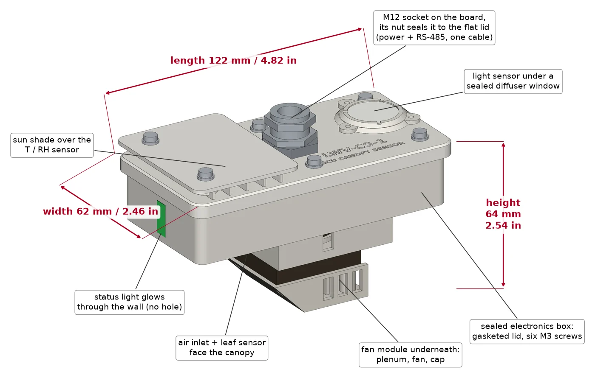
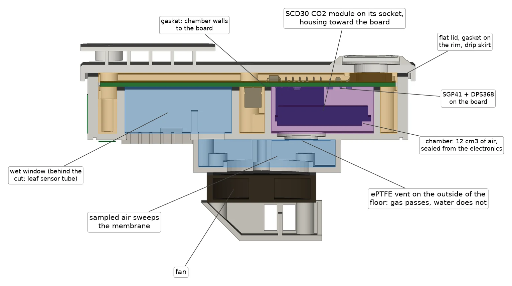
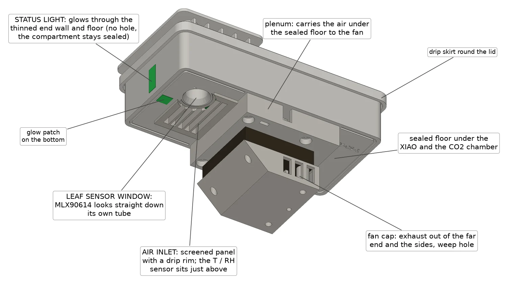
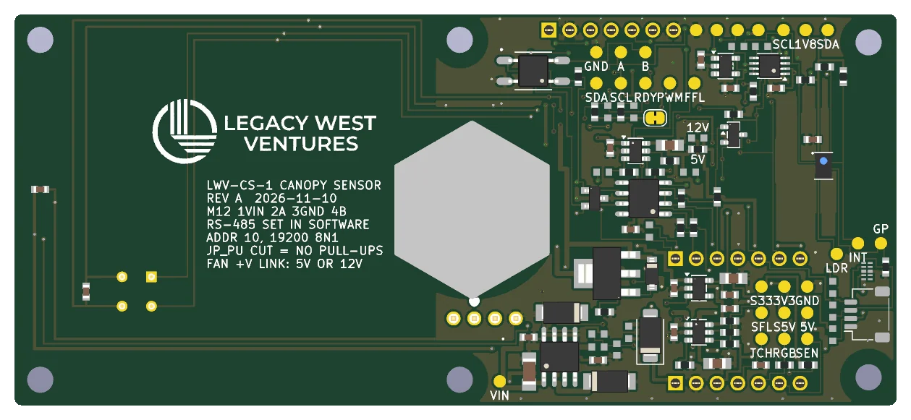
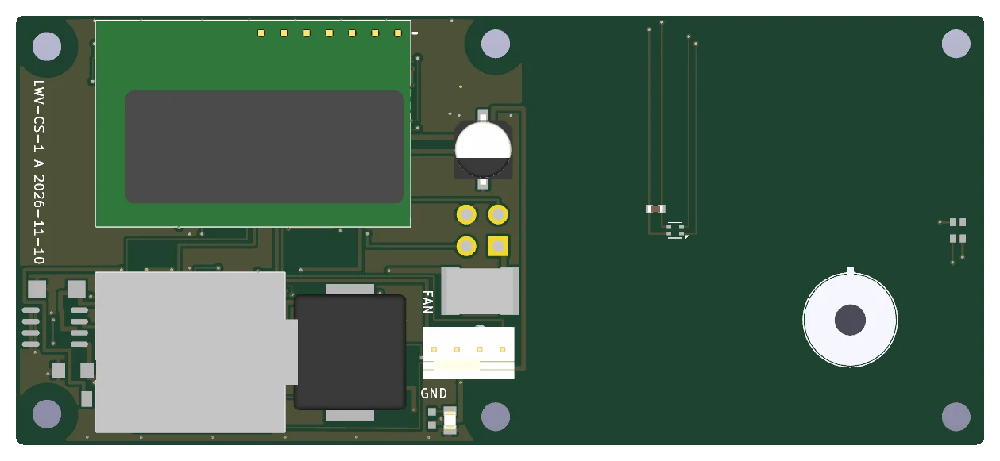
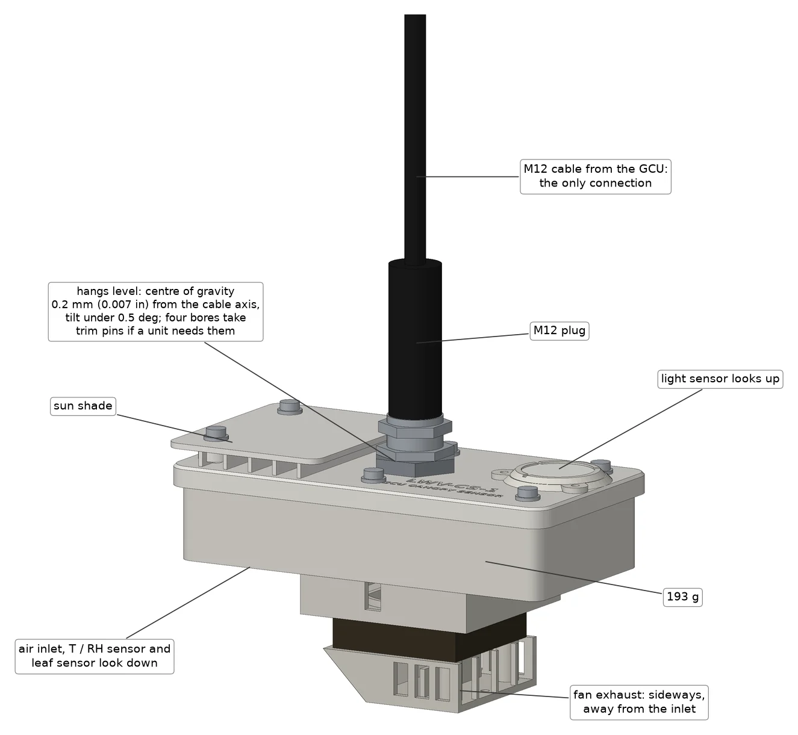
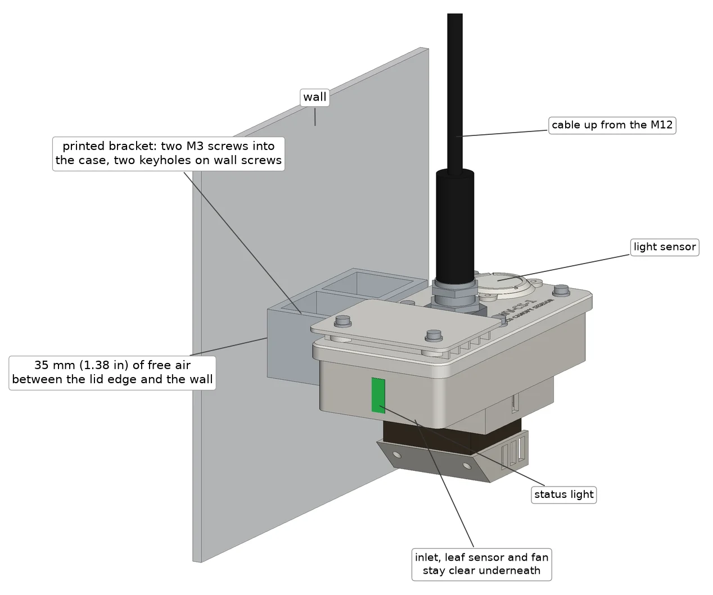
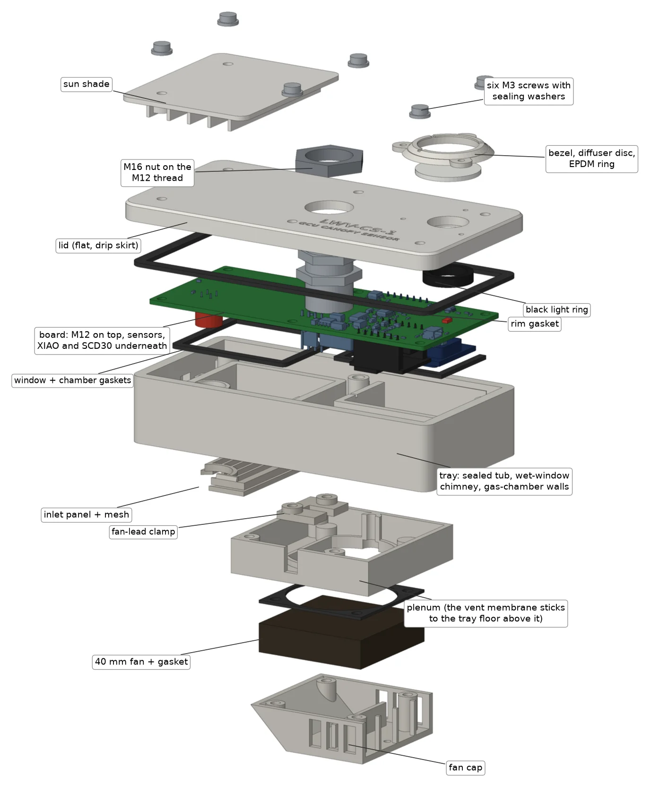

LWV-CS-1 GCU Canopy Sensor
The CS-1 hangs just above the plants and measures what they live in: CO2, air temperature and humidity, leaf temperature, light and air quality. A small fan draws room air past the humidity sensor in the shade, so the readings describe the room, not a box warmed by the grow lights. It hangs level from one M12 cable, or goes on a wall with a printed bracket. The electronics sit in a sealed box designed for IP65, the sensor knows when it has been washed and dries itself, and it is set up, calibrated, checked and updated remotely.

At the canopy, on one M12 cable
The IR blasters have to sit where they can see the mini-splits, up high and in the cold air those units blow out. That is the wrong place to measure a room. The CS-1 hangs 20–40 cm (8–16 in) above the canopy, away from the mini-split discharge, where the plants actually are.
It has one connector: an M12 socket in the middle of the lid that carries 24 V and RS-485, the same four wires the IR blasters use. The cable it plugs into is also what it hangs from. The GCU reads it once a minute, as it does today's sensor, and passes everything to GCU Cloud. Its address and every other bus setting are set in software, so it can replace today's sensor at the same address or run beside it at the next one.
Six readings, each from a best-in-class part
| Reading | Sensor | Why this one |
|---|---|---|
| CO2 | Sensirion SCD30, dual-channel infrared, 400–10 000 ppm, ±(30 ppm + 3 % of reading) | A second, reference channel tracks the lamp as it ages, so it stays calibrated in a sealed room that is enriched all day and never sees fresh air. Its automatic self-calibration stays off for that reason; corrections come from GCU Cloud. It plugs into a socket, so it can be replaced, and JLC stocks it, so the boards come back fully built. |
| Air temperature and humidity | Sensirion SHT45 with a filter membrane, ±0.1 °C, ±1.0 %RH typical | Sensirion's top grade. Its membrane is rated IP68, so it can sit in the open air stream and take a wash; its built-in heater dries it afterwards. |
| Leaf temperature | Melexis MLX90614, infrared, 35° view | Reads the leaves without touching them, straight down through its own tube. Leaf temperature gives leaf VPD, which is what the plant responds to, next to the air VPD. |
| Light | ams AS7341: 8 colour bands plus clear, near-infrared and flicker, under a sealed diffuser window | Lights on and off, dimming steps, the red to far-red balance, flicker, and light leaks during the dark period. Shown as relative light until it is calibrated against a quantum sensor for each fixture type. |
| Air quality | Sensirion SGP41, VOC and NOx index | A trend against the room's own normal (100 = normal): a pesticide or cleaning-product application, a sulfur burner, something burning. |
| Barometric pressure | Infineon DPS368 | Fed to the CO2 sensor so its reading is right at altitude and in weather, and reported too. |
Sealed electronics, two sensors in the open air, three behind a vent
A grow room gets sprayed, fogged and hosed down between crops. The CS-1 is built in three zones so that water only ever reaches parts made for it. The processor, power supply and everything else sit in a sealed box: a gasketed flat lid held by six screws, the M12 socket sealed to the lid by its own nut, the light sensor under a sealed window, and a status light that glows through a thinned wall, with no hole. There is no USB opening.
Only two sensors are in the open: the humidity sensor, behind its IP68 membrane, and the leaf thermometer, a sealed metal can. They sit in a wet window that opens straight down, so water drains out and nothing holds a puddle. The CO2, air-quality and pressure sensors sit in a small gas chamber behind a membrane vent that lets gas through and keeps water out.



Where the water goes
- The lid is flat with nothing recessed. It overhangs the walls and ends in a drip skirt, so water falls clear of the lid seam.
- A drip groove under the floor stops water creeping across to the inlet or the leaf sensor.
- The wet window has no sill: what gets in drains straight down.
- The plenum has a weir in front of the fan and two weep holes; the fan cap has its own.
- The vent faces down, flush with the plenum ceiling, so nothing can stand on it.
Second line of defence
- JLC coats the top of the board with an acrylic conformal coat in two large blocks, including the back of the wet window. The underside carries the sensors and sockets and stays bare; the seals protect it.
- Gaskets are EPDM. Nothing in the box is silicone, which can poison gas sensors.
- The fan sits outside the sealed box. The Noctua fan fitted now is not a sealed fan; the board already has the place for a 12 V supply, left unfitted, so a sealed IP68 fan can replace it without a new board.
It knows when it is wet, and dries itself
Wash mode
Before a pod is washed, GCU Cloud tells the sensor. The fan stops so it does not pull spray in, the sensors power down, and the readings are sent as "no data" so nothing downstream acts on a wet sensor. Wash mode ends by itself 60 minutes after the last request, so a sensor is never left asleep.
Wet detection
If nobody announced a wash, the sensor notices by itself. When humidity sits at 99 % or more for 10 minutes it pulses the humidity sensor's heater: a dry sensor drops quickly, one with water on it does not. It then flags itself wet instead of reporting 100 % as if it were real.
Dry-out
Drying uses what the room already offers. When the lights are on or the room air is dry enough, the fan runs at full speed and the heater pulses until the humidity sensor reads the room again. Then every sensor is checked and the unit reports "ready".
Tied to the pod's cycle
When a new grow program starts its first stage (plants in again), the GCU runs a dry-out and self-check on every CS-1 automatically. The "wash starting" message at harvest has to come from GCU Cloud, the GCU Manager or the app, which know when a pod is harvested and empty; that part is still to be built.
Troubleshooting from the floor
One light, visible as a band on the end wall and a patch underneath. It shines through the case wall, so there is no opening to seal. It stays dark during the plants' night, except when someone asks a unit to identify itself, right after power-up, and during a wash that started with the lights on.
| What you see | What it means |
|---|---|
| One blink per sensor at power-up | Roll-call: green = that sensor answered, amber = missing. |
| Short blue flick | The GCU has just read it. No flicks = no communication. |
| Amber blinks, counted | 1 CO2 · 2 humidity · 3 air quality · 4 leaf · 5 light · 6 pressure · 7 fan · 8 new bus settings on trial · 9 bus settings went back to the old ones. |
| Slow blue | Wash mode. |
| Two blue flashes | The sensor has found itself wet. |
| Cyan | Drying. |
| Steady green for 30 seconds | Dry, checked and ready. |
A plain rectangle, built complete by JLC
The board is a plain 108 × 48 mm (4.25 × 1.89 in) rectangle with two layers. The sensor positions came first, then the simplest board and assembly; the case does the rest, including the balance. Rev A is the prototype, so what we expect to learn in the test pods can be changed with a line in JLC's parts list or a reprinted case part.


- One M12 socket, soldered to the board. No wires inside the case and no separate connector card. Its nut clamps the lid.
- Built by JLC, nothing soldered by us. The CO2 sensor (on a socket, so it can be swapped) and the leaf thermometer are fitted at the factory. We plug in the processor, Seeed's XIAO with factory-fitted pins, the same way round as on the GCU V5, and the fan.
- Sensors on their own switched power. The firmware can power-cycle a stuck sensor and clear a stuck bus remotely, and powers them down for a wash.
- Two fan options on one board. A 5 V PWM fan is fitted, behind its own current limit, so a jammed fan cannot take the board down. The parts for a 12 V sealed fan have their places and stay unfitted; a link marked 5V / 12V selects the supply.
- No switches. Address, baud rate, parity and the bus terminator are all set over the bus. A new setting runs on trial after a restart and goes back to the old one by itself if nothing answers it, so a mistake cannot strand a unit. A unit can also be moved to a new address by its serial number while it still shares an address with another sensor.
- Speaks today's protocol too. The first registers mirror today's sensor, so a CS-1 reads as CO2, temperature and humidity on any GCU, even before its firmware knows about the CS-1.
- 24 labelled test points and spare processor pins on bare pads, with no holes through the sealed zones.
No ladder, no carrying it outdoors
Calibration from the cloud
Today's sensor is calibrated by opening its cover, carrying it outdoors and holding a button. The CS-1's CO2 correction is sent from GCU Cloud through the GCU and kept in the CS-1. The dual-channel design means it should rarely be needed.
Health you can see
Every sensor reports its own status, the fan reports its speed, and the unit reports its state: measuring, wash mode, wet, drying or ready. A reading that is not good is sent as "no data", never as the last good value. Firmware updates go over the same RS-485 cable, with the method the LWV I/O board and IR blaster use; the CS-1 also checks the whole image and refuses one built for another board before it switches. The GCU side that sends an update down the cable is still to be built; until then units are updated on the bench.
Hangs level from its cable, or stands off a wall
The case is printed in-house in white ASA, which reflects the grow lights and stands up to UV and humidity. Nine parts print without supports, plus a bracket for wall mounting. The M12 socket is in the middle of the lid and the fan module is placed underneath so the centre of gravity falls on the cable: the model puts it 0.2 mm (0.007 in) off the cable axis, a tilt of less than half a degree. Four bores take small steel pins to trim a unit that hangs off level.



| Size | 122 × 62 × 64 mm (4.82 × 2.46 × 2.54 in), lid top to fan-cap bottom. 71 mm (2.80 in) tall with the sun shade, 79 mm (3.09 in) to the top of the M12 socket. |
| Weight | 193 g (6.8 oz) hanging; the wall bracket adds 21 g (0.7 oz). |
| Material | White ASA; one small ring in black ASA keeps the status light out of the light sensor. |
| Hanging | From its M12 cable, plugged into the socket over the centre of gravity; raised with the cable as the crop grows. |
| Wall | Printed bracket, two keyholes 32 mm (1.26 in) apart for M4 or #8 pan-head screws; wall to the far edge of the case 97 mm (3.83 in). Mount it so the canopy is less than 160 mm (6.3 in) below the sensor, or the leaf thermometer starts to see the wall. |
| Connection | One M12, A-coded, 4-pin, on top: 24 V, RS-485 A and B, ground. |
| Seals | EPDM gaskets under the lid, round the wet window and round the gas chamber; sealing washers under the lid screws; a membrane vent for the gas chamber. |
More readings, better ones, and looked after remotely
| SenseCAP S-CO2-03 (today) | LWV-CS-1 | |
|---|---|---|
| CO2 | ZyAura ZG09 infrared module, ±(50 ppm + 3 %), sealed inside the box | Sensirion SCD30 dual-channel infrared, ±(30 ppm + 3 %), pressure-compensated, behind a membrane vent in moving air |
| Response | About 5 minutes to settle (diffusion into a closed box) | About 1 minute (model estimate, to be measured) |
| Calibration | Open it, carry it outdoors, hold a button | From GCU Cloud |
| Air temperature / humidity | ±0.2 °C / ±1.8 %RH, passive | ±0.1 °C / ±1.0 %RH, fan-drawn and shaded |
| Leaf temperature and leaf VPD | — | Yes |
| Light at the canopy, dark-period leaks | — | Yes |
| Air quality (VOC, NOx) | — | Yes |
| Pressure | — | Yes |
| Water protection | IP65 | Electronics enclosure designed for IP65 (to be tested); wash mode, wet detection and automatic dry-out |
| Connector | M12 fitted by us | M12 soldered on the board, sealed to the lid |
| Firmware updates | None | Over the RS-485 cable (GCU side to come) |
| Health | A value or silence | Per-sensor status, fan speed, unit state, and a status light with fault codes |
Side by side with today's sensor first
The first units go to a few test pods and hang next to the existing sensor. The existing sensor keeps address 10 and keeps running the pod. The CS-1 sits at 11, set in software before it joins the bus, and is monitor only: it is recorded and charted, but the GCU will not hand control to it, even if the other sensor fails. That rule comes off when the data says it should.
What the test pods check
- CO2, temperature and humidity against today's sensor beside it, through enrichment and light changes.
- How far the CO2 reading lags behind the vent, and the air speed past the humidity sensor.
- A real wash: wash mode, wet detection and dry-out, and how long drying takes.
- Leaf temperature with the box at 20 and at 40 cm (8 and 16 in), to rule out its own shadow.
- The dark count with the lights off, which sets the dark-period leak alarm.
- Whether the status light is bright enough through the wall under grow lights.
Rev A at a glance
| Power | 24 V DC from the M12 cable, about 0.8 W. Fused, reverse-polarity protected, surge clamped. |
| Bus | RS-485, Modbus RTU. Address, baud rate (9600–115 200), parity, stop bits, reply delay and the 120 Ω terminator are all set in software; factory setting address 10, 19 200 8N1, terminator off. A new setting that nothing confirms reverts by itself. |
| CO2 | 400–10 000 ppm, ±(30 ppm + 3 % of reading), dual-channel infrared (Sensirion SCD30), pressure-compensated from the on-board barometer. |
| Air | ±0.1 °C, ±1.0 %RH typical; dew point and VPD; barometric pressure (Infineon DPS368). |
| Leaf temperature | Infrared, 35° view, ±0.5 °C, emissivity set for leaves. |
| Light | 8 colour bands plus clear, near-infrared and flicker; relative light, on/off, dimming, dark-period leak flag. |
| Air quality | VOC and NOx index, 1–500. |
| Aspiration | Noctua NF-A4x10 5V PWM fan, speed monitored; about 1.9 m/s expected past the humidity sensor at the normal speed (1.0 m/s required; to be measured). |
| Processor | Seeed XIAO RP2350 with factory-fitted pins, plugged in; firmware updates over RS-485. |
| Protection | Electronics enclosure designed for IP65, not yet tested. Board top conformal coated. |
| Size and weight | 122 × 62 × 64 mm (4.82 × 2.46 × 2.54 in), 193 g (6.8 oz). |
| Mounting | Hangs from its M12 cable, or on a wall with the printed bracket. |
| Board | 108 × 48 mm (4.25 × 1.89 in), 2 layers, ENIG finish (lead-free), plugged vias. |
Rev A design status, November 11
The board, the case and the firmware are designed. Nothing has been ordered, printed or run on hardware yet, so every airflow, response and balance figure on this page is a model estimate.
| Part | Where it is | What has been checked |
|---|---|---|
| Circuit board | Designed and routed. Not yet rebuilt in EasyEDA and not yet in the JLC cart. | Electrical and design-rule checks clean (0 errors, 0 unconnected); 546 automatic checks against the design brief, including the sealed zones, the processor's orientation and the M12 pin order; checked against JLC's own pad shapes with no conflicts; every JLC part in stock on 2026-11-11. |
| Case | 9 parts and the wall bracket modelled, ready to print | 36 fit checks pass and no part of the board touches the case. Balance, air speed and CO2 response are calculated, not measured. |
| CS-1 firmware 0.4.0 | Written and building | All test suites pass on the PC, including wash mode, wet detection, dry-out and the status-light codes. Not yet run on hardware. |
| GCU firmware | CS-1 support on a development branch | Builds. Sensor type per slot, the monitor-only switch, remote CO2 correction, the wash and dry commands, and the automatic dry-out when a grow program starts. Not yet on a lab unit. |
| GCU Cloud, GCU Manager and the app | To do | Sensor settings, the CO2 correction button, charts for the new readings, the unit's state, and sending "wash starting" when a pod is harvested. |
Before ordering
- JLC's answer on how they clean a board before coating: the CO2, humidity and air-quality sensors must not be washed.
- Measure one M12 socket (flange thickness and thread length) before printing lids; the lid height follows it.
- Confirm the vent membrane part and that its adhesive is not silicone.
- Buy the parts JLC does not sell: the XIAO processors with factory-fitted pins, fans, heat-set inserts, screws and sealing washers, EPDM sheet, vent membranes, diffuser discs and mesh.
- After the order, check JLC's placement pictures for the parts on the underside.
Then
- 3 sensors built and brought up in the lab; weigh and hang the first one and trim it level.
- Water-jet test of a printed case with a dummy board inside.
- Measure the air speed, the CO2 lag and the status light's brightness; tune wet detection on one wet and one dry sensor.
- The GCU firmware on a lab unit with a CS-1 on its bus.
- The first test pods, monitor only, beside today's sensor.